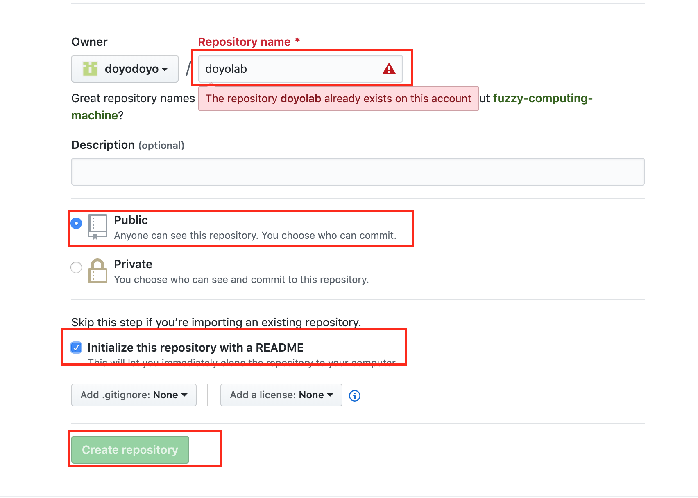
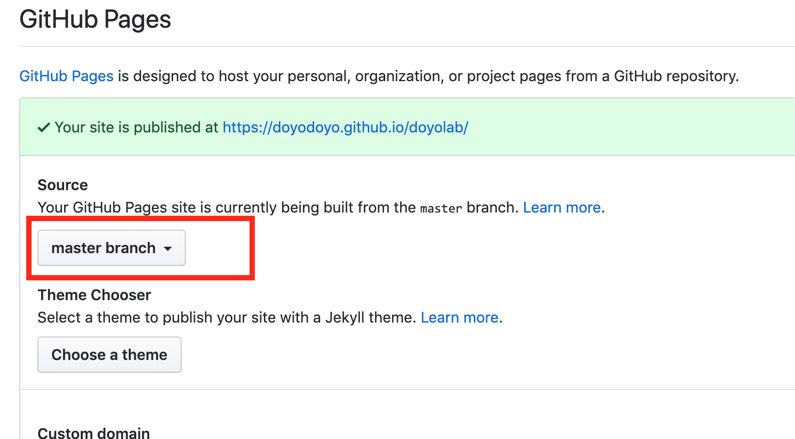
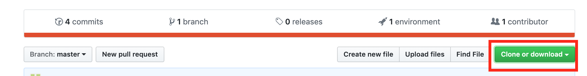

GitHubのページでGitHubのアカウントを作りましょう。

ターミナルに下記のコマンドをコピペし、Enterを押すとHomebrewがインストールできます。
しばらく時間がかかるので、待ちましょう。
/usr/bin/ruby -e "$(curl -fsSL https://raw.githubusercontent.com/Homebrew/install/master/install)"
ターミナルで下記のコマンドを入力しEnterを押し、gitをインストールします。
brew install git
フォルダはなんでもいいのですが、わかりやすいようにホームディレクトリにmygitというフォルダを作りましょう。ターミナルを立ち上げて下記のコマンドを入力するとフォルダが作成されます。
mkdir mygit
githubの右上にある+マークをクリックし、New Repositoryをクリックし、新しいリポジトリーを作ります。
下記の画像を参考にdoyolabというリポジトリーを作成します。

リポジトリーのSettingsから下記の設定をします。

githubのdoyolabというリポジトリーの中で下記のボタンを押し、リポジトリーのURLをコピーします。 
ターミナルを開いて、下記のコマンドでmygitフォルダに移動します。cdはchange directoryの略です
cd mygit
ターミナルで下記のコマンドを入力し、クローンを作成してください。(URLは上でコピーしたURLです。)
git clone リポジトリのURL
mygitの中にdoyolabというフォルダができて、doyolabフォルダの中にREADME.mdファイルが入っていれば成功です。
htmlファイルを作って、doyolabフォルダに入れ、下記の手順でgithubへアップロードできます。
cd mygit/doyolab
(doyolabフォルダに移動するだけなので、既に移動済みの場合はいらない)
git add .
git commit -m"メッセージ"
git push